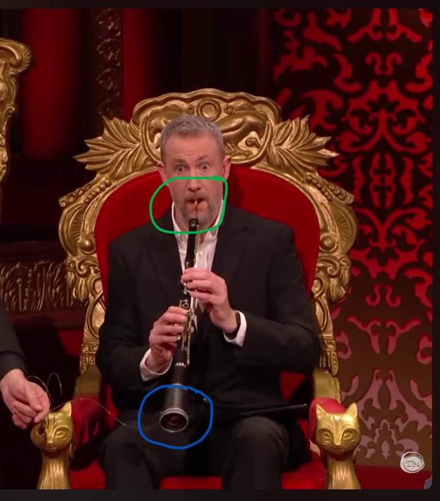
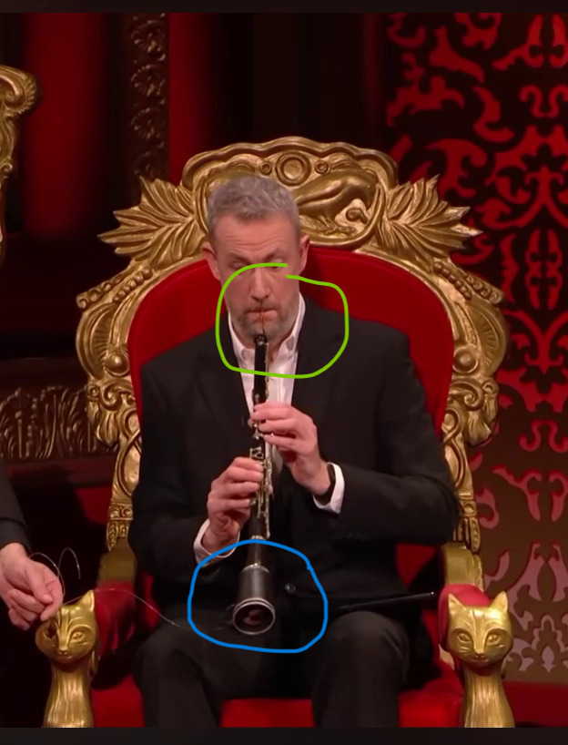

Oboe You Didn't!
Your Task
Critique Little Alex Horne’s Oboe skills as exhibited in the first episode of the 2026 New Year’s Treat.
Expand and enhance upon LAH’s oboe performance. Best enhancement wins.
Little Alex Horne Ob(o)e
In the first episode of the 2026 New Year’s Treat at around the 1:45 mark, Little Alex Horne demonstrates his oboe playing, or rather miming1, skills as part of a joke centered around him recently being awarded an OBE (Officer of the most excellent Order of the British Empire).
As a fellow amateur oboist, it feels appropriate that I can provide constructive criticism of Alex’s performance and oboe etiquette.
Oboe Storage
As seen from Figure 1, Little Alex Horne should take extra care of his oboe and the reeds when it is not in immediate use. Being able to pull it from behind your back with an exposed reed, whilst convenient, is no doubt an easy way to damage the reed.
Figure 1: I thoroughly disapprove of how Little Alex Horne stores his oboe and the exposed reed when it is not in immediate use.
A serious oboist treats their reed with the utmost care. Reeds are the vital lifeline of an oboe as it is what makes the sound.
Reeds are also the bane of an oboist’s life; they are very temperamental and oboe reeds are significantly more expensive than other single and double reeded instruments (Clarinets, Bassoons).
The O-Body
At first glance, the oboe that Mr Horne is playing on looks like a legitimate oboe; compare Figures 2 and 3.
Figure 2: Are you sure of your embouchure, Mr Little Alex Horne?
Green circles: Alex’s embouchure.
Blue circles: The bell of this oboe.


Figure 3: A labelled oboe for reference, courtesy of johnpacker.co.uk.
.](https://johnpacker.co.uk/cdn/shop/articles/oboe_buying_guide_a921edf8-91f8-4f94-acad-25f012c40a92.jpg?v=1740732141)
However, on closer inspection, the blue circles (indicating the bell of the oboe), do appear to be different to a typical oboe; the brim is not as thick and ends more abruptly. Add to this, there appears to be two silver joints in quick succession on the lower end of Alex’s oboe, whereas a typical oboe only has one joint above the bell.
Did Alex Horne add an appendage to his oboe’s bell end? Was this appendage purely for the joke of pulling out a snake from the bell end?
It’s not clear why such an appendage was required. The toy snake could have been placed in the oboe’s existing bell comfortably in my opinion. The sound would have been muffled and muted no doubt; but this audio effect could be used to a player’s advantage in the correct circumstances2. However, I doubt Mr Horne was worried about the sound quality he was going to produce.
The snake appears to be made of rigid, plastic-esque material, with noticeable force being used by the Taskmaster himself (Greg Davies), to pull out the snake. The appendage could thus potentially, and commendably, be added to avoid damage to the real oboe itself. A felt or cotton snake would have been sufficient for the gag and not damaged the oboe, but likely not realistic enough. And of course Taskmaster is all about the realism…3
A Read on the Reed
As seen in the green circles of Figure 2, Alex is using an actual oboe reed, compared to say a bassoon reed (considerably wider at one end than the other). Mr Horne also seems to be adopting the appropriate embouchure4 to play the oboe; he is pulling his lips over his teeth, and then lightly sandwiching the reed between these cushioned teeth when placing it into his mouth. He is hopefully not biting down on the reed too much. Whilst this may not be the most optimal embouchure, he is not simply putting the reed in his mouth with no cushioning on the teeth, and blowing into it; this is what I incorrectly self taught myself back in 2002…
Mr Horne apppears to be using an actual oboe reed for this gag, and is also adopting a good embouchure for playing the oboe.
A Load of Quack
We now turn to Mr Horne’s actual playing and the sound being made.
Alex manages to say the word “Pull!” and “Harder!” to his master5, whilst an oboe is still heard. From this observation, it is clear that Mr Alex Horne is miming along to a pre-recorded track.
Add to this, I have doubts as to whether the pre-recorded audio was even of an oboe; to my (naive) ears, there are soprano saxophone qualities to the audio track. This also seems plausible as Alex could have relied on his The Horne Section brethren, and specifically relied on saxophonist Mark Brown to provide an audio track. Soprano saxophones are capable of making the following sound, which are typically brighter and breathier in tone.
Figure 4: Is Mark Brown the true talent behind Little Alex Horne’s OBoE?

Mr Horne is miming to a pre-recorded track; it is not possible to make an oboe sound whilst talking coherently.
There are also suspicions that the pre-recorded track is not even of an oboe, but fact of a soprano saxophone.
And why do I believe fake musical news is being promoted by Little Alex Horne and the Taskmaster team? Based on my (naive) ears:
- a soprano saxophone typically has a much brighter, breathier sound due to the single reed noise producing mechanism used,
- an oboe has a more nasal, piercing and mellow sound, a result of the double reed sound production.
This is most distinct in the first few seconds of Alex’s “playing”; the audio track is considerably brighter, smoother and less piercing in the opening few bars. The pre-recorded track also seems to be more stable and smoother with respect to tuning and pitch.
For reference, a professional oboist is capable of making the following sound and tones. Famous pieces featuring an oboe include:
- Representing the Duck in Peter and the Wolf by Sergei Prokofiev.
- Theme to Swan Lake by Pyotr Tchaikovsky.
- Gabriel’s Oboe from the film “The Mission” by Ennio Morricone.
- I Got You Babe by Sonny and Cher
A sound comparison between a soprano saxophone and (baroque) oboe is usefully provided in this youtube video, which may or may not support my suspicions.
The New Haut-Bois In Town
Wait, you play the oboe?! What does the full Taskmaster theme sound like on the oboe? Can you transcribe it so that I can learn how to play it?
Sheet music for the full Taskmaster theme tune, can be found on my buymeacoffee page. I hope fans of Taskmaster and fellow musicians enjoy it; I’m sure there are some mistakes and discrepancies as to what the Horne Section have actually composed it to be.
Some remarks based on my by transcription and rendition of the Taskmaster theme:
- My oboe rendition sounds noticeably different to Alex’s. It should provide a bit more insight as to why I believe the pre-recorded track is not of an oboe.
- My rendition provides a darker, more mysterious timbre and mood. The oboe’s more piercing (almost annoying) tone is also more apparent.
- I’ve taken the artistic liberty to take the piece at a slower tempo, no doubt in order to really impress, almost seduce, the “tall motherf*cker with the ivory hair”.
- I am not able to speak coherently, and play the oboe at the same time.
- My transcription features appropriate phrasing to provide insight as to how shape the Taskmaster theme, and also when a player could potentially breathe.
- The chromatic scale ending (which adds excitement and tension) highlights why practising scales, arpeggios and other musical drills is important for current students.
- The high end of the oboe’s range is used which introduces some questionable tuning and intonation.6
- I apologise for how painful this may be for listeners with relative or perfect pitch.
Figure 5: Horne Section … Assemble!

What Have We Learnt Today?
We’ve learnt that:
- Little Alex Horne still has a long way to go as an oboist.
- LAH needs to show better respect to his oboe and reeds when they are not in immediate use; pulling an oboe out from behind your back with the reed exposed is a sure way to abruptly terminate a player’s ability to perform.
- LAH needs to actually make a sound from his oboe himself, rather than miming to a pre-recorded track. If anything, he should get better at miming more accurately and convincingly to the track; talking coherently whilst simultaneously playing the oboe is not possible.
- Alex does adopt a reasonable embouchure when miming the oboe which should be commended.
- An extra appendage appears to be utilised on this bell end’s oboe bell end.
- The extra appendage was likely employed to avoid damage to the the oboe’s bell, especially if using a realistic plastic snake was paramount. Why this realism couldn’t be extended to Alex’s actual oboe playing remains unanswered however.
- There are high suspicions that the pre-recorded track is not even of an oboe, but rather a soprano saxophone.
- Who would have thought Taskmaster would facilitate misinformation on prime time TV.
- My own expansion and enhancement of Little Alex Horne’s oboe “playing” highlights:
- The clear difference in tone and timbre between a live oboe rendition of the Taskmaster theme, to a pre-recorded fake oboe track; the live oboe is darker and more mysterious.
- The top range of the oboe being utilised for the theme introduces intonation challenges for any (budding) oboe player. This is an aspect that LAH did not have to encounter since he did not reach these measures in his miming rendition. Yet another reason for LAH to return his OBoE award,
- I’ve demonstrated other skills that I possess, namely basic music transcription and piercing oboe playing.
- The sheet music for the Taskmaster theme tune (specifically for oboe), can be found on my buymeacoffee page. It’s free!
Figure 6: Yes…run away Mr Little Alex Horne (OBoE) with your French Horn. The Haut-bois club does not welcome you and your false playing. Please return your OBoE at the front door.

More on this later…↩︎
I was once instructed by one of my oboe teachers to place an old sock into my bell in order to play pianissimo for low notes. These low notes are notoriously difficult to play, let alone quietly, due to the extra amount of air required to make a sound.↩︎
Sarcasm of course…↩︎
A fancy way of saying how you should put the instrument into (or towards) your mouth.↩︎
The Taskmaster Fanfic community must be having a field day with these suggestive exclamations.↩︎
I’m looking at you top D and E!↩︎